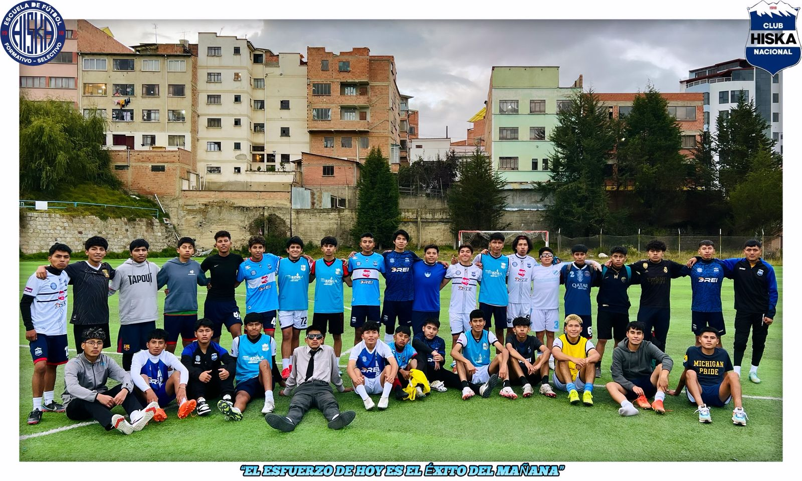
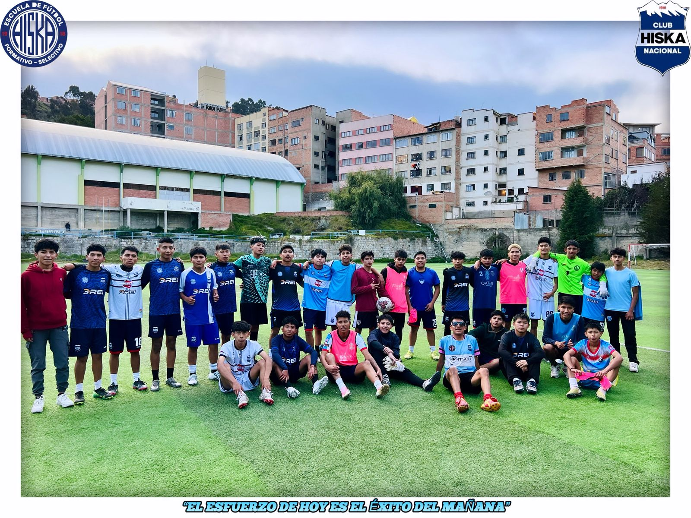

NUESTROS PROGRAMAS

SUB-15
Objetivo: Formación integral del jugador en sus primeras etapas.
Enfoque técnico: Control de balón, pase, conducción, coordinación motriz.
Formación en valores: Respeto, disciplina, compañerismo y responsabilidad.
Preparación física: Desarrollo de habilidades básicas (agilidad, equilibrio).
Metodología: Entrenamientos dinámicos y educativos.
Frecuencia: 3 veces por semana.
Evaluación: Seguimiento continuo del progreso.
Beneficios: Participación en torneos locales y desarrollo personal.
SUB-17
Objetivo: Desarrollo competitivo del jugador.
Enfoque táctico: Posicionamiento, sistemas de juego y estrategia.
Preparación física: Resistencia, velocidad y fuerza.
Entrenamiento mental: Liderazgo, concentración y toma de decisiones.
Metodología: Trabajo técnico-táctico avanzado.
Frecuencia: 4 entrenamientos semanales + partidos.
Evaluación: Análisis individual y colectivo.
Beneficios: Participación en ligas y visibilidad para clubes.


SUB-19
Objetivo: Preparación para fútbol profesional.
Enfoque avanzado: Estrategia, lectura de juego y rendimiento.
Preparación física: Plan personalizado, nutrición y recuperación.
Desarrollo profesional: Disciplina, ética y proyección deportiva.
Metodología: Entrenamiento intensivo.
Frecuencia: Sesiones diarias.
Evaluación: Control técnico, físico y táctico.
Beneficios: Pruebas en clubes y torneos de alto nivel.